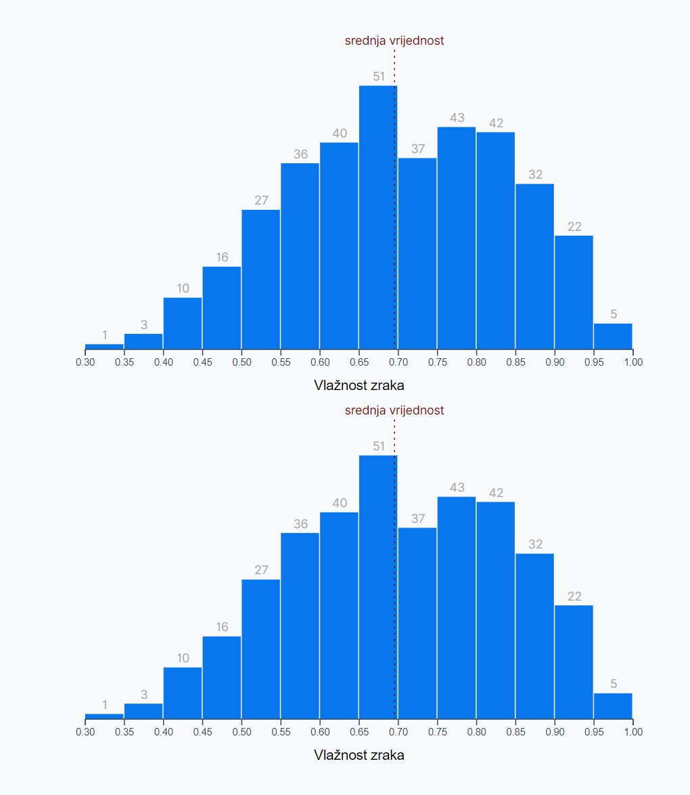

Vizualizacija podataka
Vježba 03
Vježba 03
- Preostala nam je još jedna vrsta osnovnog grafa
- Jedno od pitanja na koje vizualizacija može ponuditi odgovor je "kako izgleda distribucija nekog podatka?"
- Ako uzmemo za primjer skup podataka koji smo do sada koristili (vrijeme u NYC) možemo se zapitati:
- koje vrste vlažnosti zraka imamo
- je li razina vlažnosti uglavnom oko iste vrijednosti, sa nekoliko vrlo vlažnih ili suhih dana
- ili možda stalno varira, bez neke standardne vrijednosti
Vježba 03
- Na prethodnoj vježbi smo napravili scatterplot ali iz njega je teško iščitati distribuciju vrijednosti za vlažnost zraka
- ne možemo odgovoriti "upada" li većina točaka oko sredine tablice
- Zato ćemo napraviti stupčasti graf (bar chart) koji pokazuje distribuciju nekog podatka
- takav graf prikazuje vrijednost na x osi, a frekvenciju pojavljivanja te vrijednost na y osi
- ovakav graf se naziva histogram

Vježba 03
- Histogram se prikazuje na način da se vrijednosti prikazuju u individualnim "košarama" (bin) koje moraju biti jednake širine
- ako imamo više vrijednosti nego košara onda ih možemo grupirati u jednolikom razmaku (npr [0-10], [10-20], [20-30])
- broj i veličina košara ovisi o onome tko smišlja prikaz
- ovisi o podacima i preglednosti krajnjeg rezultata
- Cilj vježbe je napraviti histogram vrijednosti za vlažnost zraka
- tražimo odgovor na pitanja:
- Postoji li srednja vrijednost sa ekstremima ili možemo dane na vlažne i suhe
- tražimo odgovor na pitanja:
Vježba 03
- Prije nego započnemo sa radom sjetimo se koraka:
- Pristupanje podacima
- Dimenzije grafa
- Crtanje praznog grafa
- Definiranje razmjera
- Iscrtavanje podataka
- Crtanje pomoćne grafike
- Postavljanje interakcija
Vježba 03
- Početak
- sa stranice kolegija preuzmite datoteku "vj03_pocetak"
- otpakirajte cijeli projekt i otvorite u VS code
- Ponovno koristimo skup podataka "vrijeme.json"
- Projekt sadrži d3.js biblioteku, font koji ćemo koristiti te CSS datoteku za oblikovanje
- Započinjemo vježbu sa datotekom "bar.js" koja već ima napisanu praznu asinkronu funkciju
async function crtajBarChart() {
// ovdje ide kôd
}
crtajBarChart()1. Pristupanje podacima
- Prva dva koraka bi nam trebala biti dobro poznata
- učitavanje cijelog skupa podataka
- izrada accessor funkcije
- dohvaćamo samo jedan podatak (humidity)
- Pokušajte sami ovo napisati
const dataset = await d3.json("vrijeme.json")
const xAccessor = d => d.humidity2. Dimenzije grafa
- Ovaj put nećemo koristiti cijelu širinu prozora
- napraviti ćemo relativno mali graf sa fiksnom širinom
const sirina = 600
let dimenzije = {
sirina: sirina,
visina: sirina * 0.6,
margine: {
top: 30,
right: 10,
bottom: 50,
left: 50,
},
}
dimenzije.grSirina = dimenzije.sirina
- dimenzije.margine.left - dimenzije.margine.right
dimenzije.grVisina = dimenzije.visina
- dimenzije.margine.top - dimenzije.margine.bottom3. Crtanje grafa
- Ovaj korak smo također ponavljali u obje prethodne vježbe
- moramo dohvatiti DOM element i unutar njega stvoriti SVG element sa zadanim dimenzijama
- zatim moramo definirati granice
- granice su "g" element kojeg dodajemo na okvir i pomičemo od vrha i u stranu za vrijednost margina
const okvir = d3
.select("#okvir")
.append("svg")
.attr("width", dimenzije.sirina)
.attr("height", dimenzije.visina);
const granice = okvir
.append("g")
.style(
"transform",
`translate(${dimenzije.margine.left}px, ${dimenzije.margine.top}px)`
);3. Crtanje grafa
- Ovo je uvijek dobar trenutak za provjeriti jesmo li ispravno dodali SVG element i jesu li dobre dimenzije
4. Definiranje razmjera
- Ponovno krećemo od poznatih akcija
- potrebno je napraviti skalu za x os
- domena i raspon su nam kontinuirani podaci pa možemo koristiti linearno skaliranje
- ne zaboravite .nice() metodu
- rezultat izgleda ovako...
- potrebno je napraviti skalu za x os
const xSkala = d3.scaleLinear()
.domain(d3.extent(dataset, xAccessor))
.range([0, dimenzije.grSirina])
.nice()4. Definiranje razmjera
- Napokon dolazimo do novih funkcionalnosti...
- Kako ćemo podijeliti podatke u košare i kolike će biti veličine
- mogli bi ručno provjeriti domenu i sami odrediti skupine
- Umjesto toga iskoristiti ćemo d3-array modul i ugrađenu metodu d3.histogram() kako bi napravili generator košara
- ova metoda je slična kao i metoda za skalu, moramo joj poslati domenu podataka
- zatim joj moramo pomoću value() metode odrediti kako će dohvatiti pojedinačnu vrijednost (accessor funkcija)
- Napisati ćemo funkciju za generator košara
const kosGenerator = d3.histogram()
.domain(xSkala.domain())
.value(xAccessor)4. Definiranje razmjera
- Nedostaje nam još jedan parametar u našoj funkciji za generiranje - moramo odrediti koliko će biti košara
- to radimo pomoću tresholds() metode (broj je + 1)
- Na kraju ćemo pozvati metodu za generiranje košarai poslati joj skup podataka - rezultat spremamo u konstantu
const kosGenerator = d3.histogram()
.domain(xSkala.domain())
.value(xAccessor)
.thresholds(12)
const kosare = kosGenerator(dataset)- Metoda histogram će iz skupa podataka izvući tražene podatke (value) pomoću accessor funkcije te ih ravnomjerno razvrstati unutar (tresholds + 1) košara prema zadanoj domeni
4. Definiranje razmjera
- Ispišimo košare u konzolu i pogledajmo rezultat
- Imamo niz sa podnizovima
- Svaki podniz predstavlja jednu košaru histograma
- Imamo više košara nego smo tražili - pravilne granice
- Svaka košara ima vrijednosti x0 i x1 - to su granice za tu košaru (x1 nije uključiv)
- ostatak podataka su svi pojedinačni podaci iz skupa podataka koji "upadaju" u tu košaru
4. Definiranje razmjera
- Sada napokon možemo napraviti i skalu za y os
- treba nam accessor funkcija
- koje vrijednosti prikazujemo na y osi?
- iz kojeg skupa podataka uzimamo vrijednosti?
- koja nam je domena ulaznih vrijednosti
- koji nam je raspon izlaznih vrijednosti?
- koje vrijednosti prikazujemo na y osi?
- treba nam accessor funkcija
- Možete li sami napisati funkciju za y skalu?
// Accessor je najbolje napisati na pocetku koda
const yAccessor = d => d.length
const ySkala = d3.scaleLinear()
.domain([0, d3.max(kosare, yAccessor)])
.range([dimenzije.grVisina, 0])
.nice()5. Iscrtavanje podataka
- Vrijeme je za iscrtavanje podataka
- trebat će nam jedan stupac za svaku košaru
- napraviti ćemo g element koji će sadržavati sve košare
const sveKosare = granice.append("g")- U glavnom g elementu (grupi) ćemo za svaki podatak napraviti novi g element kako bi mogli grupirati svaki stupac i oznaku
- unutar grupe ćemo napraviti selekciju svih g elemenata (kojih za sada nema ali sjetite se logike sa prošle vježbe)
const kosGrupe = sveKosare.selectAll("g") 5. Iscrtavanje podataka
- Podsjetimo se koraka povezivanja podataka sa prošle vježbe
- Napravi praznu selekciju (selectAll)
- pridruži podatke (.data() metoda)
- dohvati neiscrtane podatke (.enter() metoda)
- svakom podatku dodaj g element
const kosGrupe = sveKosare.selectAll("g")
.data(kosare)
.enter().append("g")5. Iscrtavanje podataka
- Krenimo sa crtanjem stupaca unutar košare
- definirati ćemo razmak imeđu stupaca
- svakoj košari dodajemo SVG rect element
-
rect ima 4 svojstva koja moramo podesiti
- x - x koordinata početne točke pravokutnika
- y - y koordinata početne točke
- height - visina pravokutnika
- width - širina pravokutnika
- za početak ćemo ih staviti na fiksne vrijednosti
-
rect ima 4 svojstva koja moramo podesiti
const barCrtez = kosGrupe.append("rect")
.attr("x", 0)
.attr("y", 0)
.attr("width", 20)
.attr("height", 10)5. Iscrtavanje podataka
- Naravno da nam ne odgovara da su svi stupci na istim koordinatama - krenimo sa podešavanjem x-a (lijevi rub)
- svaka košara ima svojstva x0 i x1 - raspon za tu košaru
- ako x0 (donja granica) provučemo kroz našu skalu dobiti ćemo točnu vrijednost početka grafa
const barCrtez = kosGrupe.append("rect")
.attr("x", dp => xSkala(dp.x0))
.attr("y", 0)
.attr("width", 20)
.attr("height", 10)5. Iscrtavanje podataka
- Istom logikom, širina je razlika između x1 (gornja tj. desna granica) i x0 (donja granica vrijednosti/lijeva granica stupca)
- ponovno, radi se o granicama za konkretni podatak (vlažnost) pa ih moramo provući kroz funkciju za skaliranje
const barCrtez = kosGrupe.append("rect")
.attr("x", dp => xSkala(dp.x0))
.attr("y", 0)
.attr("width", dp => (xSkala(dp.x1) - xSkala(dp.x0)))
.attr("height", 10)- Mali problem su nam razmaci pa ćemo "smanjiti" stupac na način da ćemo širinu umanjiti za padding
const barCrtez = kosGrupe.append("rect")
.attr("x", dp => xSkala(dp.x0) + barPadding)
.attr("y", 0)
.attr("width", dp => (xSkala(dp.x1) - xSkala(dp.x0)) - barPadding)
.attr("height", 10)5. Iscrtavanje podataka
- Još nam je preostalo postaviti y koordinatu i visinu
- visina stupca je vrijednost frekvencije tog podatka
- imamo accessor i skalu za y - samo ih moramo pozvati
const barCrtez = kosGrupe.append("rect")
.attr("x", dp => xSkala(dp.x0))
.attr("y", dp => ySkala(yAccessor(dp)))
.attr("width", dp => (xSkala(dp.x1) - xSkala(dp.x0)))
.attr("height", 10)5. Iscrtavanje podataka
- Visina stupca je razlika od maksimalne vrijednost (granice) do početka (tj. vrha) stupca
- po želji možemo stupce obojati u neku drugu boju
const barCrtez = kosGrupe.append("rect")
.attr("x", dp => xSkala(dp.x0))
.attr("y", dp => ySkala(yAccessor(dp)))
.attr("width", dp => (xSkala(dp.x1) - xSkala(dp.x0)))
.attr("height", dp => dimenzije.grVisina - ySkala(yAccessor(dp)))
.attr("fill", "#0877ee");6. Crtanje pomoćne grafike
- Preostalo nam je još dodati pomoćnu grafiku
- na našu selekciju košara ćemo dodati SVG text element
- ponovno započinjemo sa 0,0 koordinatama
- iskoristiti ćemo metodu .text i poslati mu vrijednost distribucije za svaki stupac
const barTekst = kosGrupe.append("text")
.attr("x", 0)
.attr("y", 0)
.text(yAccessor)- Očekivano, sada su nam sve oznake u gornjem kutu grafa...
6. Crtanje pomoćne grafike
- Visina oznake bi trebala biti jednaka visini stupca umanjena za nekoliko piksela kako bi bila odmah iznad
- x koordinatu oznake ćemo izračunati tako da lijevom rubu svakog stupca nadodamo pola širine tog stupca
- dodati ćemo i text-anchor stilsko svojstvo kako bi tekst bio centriran (jednostavnije nego da pomičemo x koordinatu)
- također možemo promijeniti boju i veličinu teksta kako bi dobili diskretniji prikaz
const barTekst = kosGrupe.append("text")
.attr("x", dp => xSkala(dp.x0) + (xSkala(dp.x1) - xSkala(dp.x0)) / 2)
.attr("y", dp => ySkala(yAccessor(dp)) - 5)
.text(yAccessor)
.style("text-anchor", "middle")
.attr("fill", "darkgrey")
.style("font-size", "12px")6. Crtanje pomoćne grafike
- Pogledajmo jedan scenarij koji nam se može dogoditi
- ovisno o vrijednostima podataka, možemo imati prazne stupce (uvećati ćemo tresholds parametar na 50 kako bi simulirali takav scenarij)
- graf sam po sebi nije vizualno dopadljiv ali želimo izostaviti oznake u slučajevima kada nemamo vrijednosti u nekom stupcu
const kosGenerator = d3.histogram()
.domain(xSkala.domain())
.value(xAccessor)
.thresholds(50);6. Crtanje pomoćne grafike
- To ćemo postići korištenjem .filter() metode koja funkcionira slično kao i filter metoda u "običnom" JS-u
- sve falsy vrijednosti će biti izostavljene (filtrirane)
const barTekst = kosGrupe.filter(yAccessor)
.append("text")
.attr("x" // ...6. Crtanje pomoćne grafike
- Još jedna korisna informacija bi bila znati gdje se nalazi srednja vrijednost (mean) naše metrike
- to je jednostavno izračunati korištenjem d3.mean() metode
const srVr = d3.mean(dataset, xAccessor)
console.log(srVr)- Sada kada znamo srednju vrijednost iscrtati ćemo je na grafu pomoću SVG line elementa koji prima 4 svojstva (x1, y1, x2, i y2) koji predstavljaju dvije točke između kojih povlačimo liniju
- također trebamo definirati stroke za boju
6. Crtanje pomoćne grafike
- Obje x koordinate pravca su jednake (srednja vrijednost)
- y koordinata počinje 15 piksela iznad grafa i ide sve do dna
- koristimo novo svojstvo stroke-dasharray kako bi iscrtali isprekidanu liniju
const srednjaPravac = granice.append("line")
.attr("x1", xSkala(srVr))
.attr("x2", xSkala(srVr))
.attr("y1", -15)
.attr("y2", dimenzije.grVisina)
.attr("stroke", "maroon")
.attr("stroke-dasharray", "2px 4px")6. Crtanje pomoćne grafike
- Na gotovo identičan način ćemo i dodati oznaku iznad iscrtane linije
const srednjaOznaka = granice.append("text")
.attr("x", xSkala(srVr))
.attr("y", -20)
.text("srednja vrijednost")
.attr("fill", "maroon")
.style("font-size", "12px")
.style("text-anchor", "middle")
6. Crtanje pomoćne grafike
- Zadnji korak nam je iscrtati labelu ispod grafa
- ovo bi također trebao biti poznat postupak
- definiramo funkciju za generiranje donje osi
- dodajemo novi g element i unutar njega pozivamo funkciju za generiranje osi (također ga pozicioniramo)
- na generiranu os dodajemo text element sa opisom osi
- ovo bi također trebao biti poznat postupak
const xOsGenerator = d3.axisBottom()
.scale(xSkala)
const xOs = granice.append("g")
.call(xOsGenerator)
.style("transform", `translateY(${dimenzije.grVisina}px)`)
const xOsOznaka = xOs.append("text")
.attr("x", dimenzije.grSirina / 2)
.attr("y", dimenzije.margine.bottom - 10)
.attr("fill", "black")
.style("font-size", "1.4em")
.text("Vlažnost zraka")7. Postavljanje interakcija
- Ponovno nemamo neke posebne interakcije za ovaj graf...
- ali to nam sljedeće dolazi na red
Sažetak
-
d3.histogram() - podjela vrijednosti iz domene u n grupa
- .domain() - domena histograma
- .value() - vrijednosti za razvrtavanje
- .thresholds() - željeni (ne nužno i konačni) broj grupa
-
<rect> - SVG element za crtanje pravokutnika sa svojstvima
- x, y, width, height
- .filter() - filtriranje falsy podataka
- d3.mean() - izračun srednje vrijednosti nekog skupa
ZADATAK
- Što će se dogoditi ako na dnu "bar.js" datoteke dva puta pozovemo funkciju crtajBarChart() -dobiti ćemo dva histograma jedan ispod drugog

- Zadatak je napraviti funkciju crtajHistogram() koja bi kao ulazni argument primila ime metrike koju želimo iscrtati (npr "humidity") te zatim isti iscrtala
- koraci 1. i 2. (dataset i objekt dimenzija) mogu biti zajednički)
- accessor mora biti parametriziran
- Nakon što ste definirali funkciju crtajHistogram, unutar crtajBarChart odradite zajednički dio logike te pozovite nekoliko instanci funkcije crtajHistogram za ove metrike
- windspeed
- dewPoint
- uvIndex
- temperatureMin
- moonPhase
- humidity
- winBearing
- Temperature max